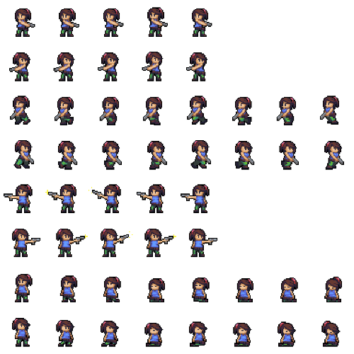

Bonjour à tous,
Je suis Théo Guichard, Je voulais prendre un moment pour vous parler
d'un projet que j'ai développé il y a quelque temps : "SpaceInvaders-ThéoGuichard". C'était un jeu que
j'ai créé lorsque j'étais encore débutant en programmation.
Inspiré par le légendaire "Space Invaders", j'ai décidé de me lancer dans cette aventure en utilisant le
langage C et la bibliothèque Raylib. Malheureusement, en raison d'autres priorités et de nouveaux projets,
j'ai dû mettre ce jeu en pause pour le moment.
Sur mon dépôt GitHub, vous trouverez le code source du jeu. Je tiens à préciser que le projet n'est pas
parfait - en fait, il est probablement un peu désorganisé, étant donné que c'était l'un de mes premiers
pas dans le domaine de la programmation de jeux. Mais je crois fermement que c'est en faisant des erreurs
que l'on apprend et que l'on progresse.
le projet est actuellement en pause.
Je vous remercie tous pour votre intérêt. Même si ce projet est en veille pour le moment je suis
reconnaissant de pouvoir partager mon parcours avec vous.
